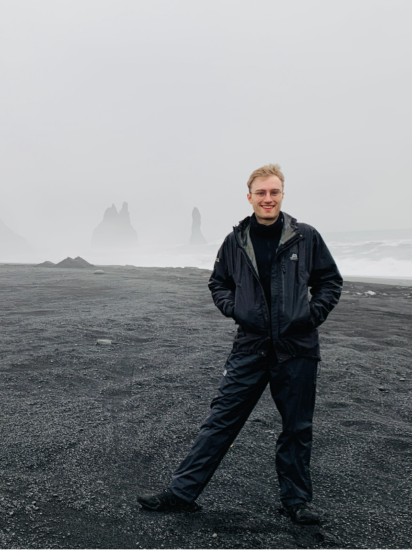

Email: davidkeithheadley@gmail.com
Applied Quantum Computing (AQC), London
Investigating quantum machine learning techniques for medical applications
Research Associate, Newcastle University
Non-perturbative topological gadgets for many-body coupling, quantum optimisation work with Unisys, and now investigating how quantum weirdness can be used for optimisation